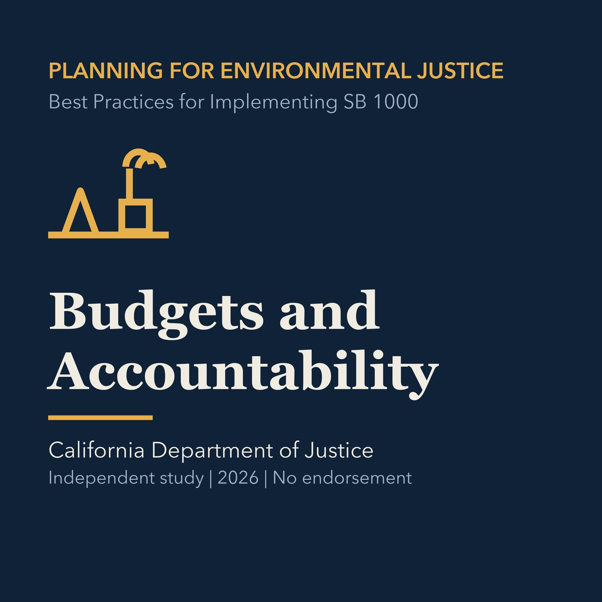

EPISODE 07
Priorities, Budgets, and Accountability
Turns environmental-justice commitments into prioritized improvements, implementation responsibility, budgets, monitoring, and public reporting.

- Stable GUID
f3630e15-03f0-5884-95c5-498ea22b658e- Release
- environmental-justice-land-use-planning-v2026.3
- SHA-256
c30fc8ef5865ef8013f104e6c252ef3001fd48f49ea36f6feb64ab175f3a74a4